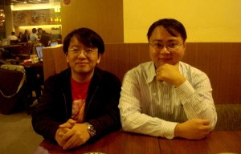

也紀念我們永遠的朋友 李士傑先生（Shih-Chieh Ilya Li）。
台灣首次 PHP 研討會圓滿落幕 PHPConf Taiwan 引領 conferences 新熱潮

前言
近幾年，台灣 open source 界出現越來越多的研討會、年會，場場爆滿，熱鬧非凡。從 COSCUP、OSDC 等綜合型的研討會，到 DrupalCamp Taipei、RubyConf Taiwan 這類針對特定領域的研討會，再再都為台灣的 open source 界注入活力。今年，又誕生了一個新興研討會－－PHPConf Taiwan。由兩位發起人－－高見龍 (eddie) 和林錦賜 (pct) ，以及自由軟體鑄造場共同主辦，首屆 PHPConf Taiwan 已經於 11/12 日在中央研究院人文社會科學館順利舉辦並圓滿落幕了。
如果說信念可以靠熱血成事，PHPConf Taiwan 2011 就是最好的例子。這個原本只打算聚集 30 人左右的小活動，因為響應人數遠超預期，遂擴大成上百人共襄盛舉的大型社群活動。活動報名從開放到額滿只花了八分鐘，噗浪河道上於是湧現怨嘆晚了一步的噗文。這場活動共吸引了 150 人，從發起到落幕只有短短兩個半月的籌備期。雖然這種「搶報名」行為在台灣的大型開源活動中十分常見，但對於一個新興的 conferences 來說，如此佳績實足以令人士氣大振、熱血沸騰。
活動起源
目前在台灣，用來寫網站的程式語言就屬 PHP 為最大宗，但一直以來卻沒有一個專門討論 PHP 技術的研討會，連相關聚會也不多見。怎麼今年忽然有人辦起了 PHPConf 呢？pct 提到他最近看到的一句話：「RubyConf 辦了，PHPConf 也辦了，那 JSConf 為什麼沒有？」其實他與 eddie 當初也是抱著同樣的心態，認為 Ruby 的使用者並不比 PHP 的多，如今連 Ruby 社群都可以舉辦 RubyConf，那為什麼還沒有一場專屬於 PHP 的 conferences 呢？兩人於是決心籌辦 PHPConf。
eddie 回憶今年八月參加 RubyConf Taiwan 的有感而發：「明明 PHP 就是台灣最多人使用的網站開發程式語言，卻從來連個什麼研討會都沒聽過，甚至連一般的常態性小聚會也很少見。」於是他在 PHP 讀書會的討論串上提出「PHP Conference?」主題，立刻引起一連串熱烈討論。pct 深有同感：「寫 PHP 的人很多，但是群龍無首，如果有人願意跳出來，我相信會風起雲湧！」於是他在噗浪上提問，如果舉辦 PHPConf 2011(＠TW)，會有人有興趣參與嗎？看到大家反應如此熱絡，他就順手建立一份公開的 Google 文件，並透過社群網站廣為散布，讓有志參與或願意提供資源的人能有個溝通討論的共通平台。於是，在大家踴躍討論之下 PHPconf 就此成形。
籌辦 PHPConf Taiwan 之心路歷程
對於 PHPConf Taiwan 的預想，兩位活動發起者都表示，規模遠比預期為大。他們原本只打算舉辦 30 人的社群聚會，連場地都已經找好了。但由於 Google 文件中的回響人數不斷增加，超過一百人表示對這個活動有興趣，主辦人不得不另謀場地，將地點換到中研院人社館，最後連同工作人員總共有 150 人，比預期大上五倍之多。至於演講場次也因為投稿人十分踴躍，議程從半天拉長到一整天。eddie 說，這次的報名盛況讓他十分驚喜，整整 100 個名額在八分鐘內就被搶光，連候補也不剩，他還聽到有社群朋友談論：「去買個便當回來，名額就沒了...…」，諸如此類對向隅的惋惜，讓他十分難忘，也很有成就感。
eddie 表示，自己雖然有籌辦活動的經驗，不過規劃正式而且時間持續全天的社群活動則是第一次。要找到空間夠大、可以租借一整天的場地十分不容易，租金更不便宜。他說：「我們本來已經有『自掏腰包也要把第一屆辦起來』的覺悟，不過幸好有 OSSF 在人力及場地上的大力贊助，讓我們有了很棒的聚會場地，也才有辦法把規模做起來。」頭一次當主辦者的 pct 也表示，能促成某件事的發生感覺非常棒，也蠻不可思議的。既然一個活動能得到大家的熱血支持，身為主辦人當然要盡力把它辦好。
關於這場活動的意義，pct 分享自己看到的一則噗浪，寫到「參加完 PHPConf 後，回家寫 code 可以熱血振奮一個月。」pct 很能體會這種心情，他回想起自己參加過多場 Hacking Thursday 聚會，會中彼此閒聊、聽聽別人 show 出的研究心得，即便回家後，那份激勵亢奮的心情仍會持續。或許是因為感覺到強者離自己這麼近、看到身邊的人是如此致力於自我提升，這種氛圍感染了在場的每個人，激發大家向上的動力。pct 說，能夠辦一場這樣的聚會十分有成就感。
未來的規劃
「能促成某件事的發生，這感覺很奇妙！」pct 表示，當初之所以會想辦 PHPConf，是因為他認為凡事總得要有人當先鋒，先拋出議題讓大家一起討論，因此對於後續的 PHPConf 並沒有太多想像。pct 和 eddie 都認為，很多寫 PHP 的高手都太謙虛了，其實 PHPConf 不該由他們來辦，而是應該由功力更高深的 PHP 玩家帶頭，他們也希望明年這些 PHP 高手可以挺身而出，領導大家更深入、全面得討論 PHP。
PHPConf Taiwan 初試啼聲就能獲得這種成功，其隱含的意義遠比想像中更為深遠。pct 說道：「沒想到這樣子到處問，也可以舉辦一個 conferences。」PHPConf Taiwan 的例子對於其他想要舉辦特定主題 conferences 的社群朋友來說，無疑是一大鼓舞。這波由 PHPConf 帶動的 conferences 熱潮，想必會令台灣的 open source 界變得更加熱鬧！
自由軟體鑄造場電子報 : 第 187 期 PaaS：程式語言開發在雲端「Programming in Paas」（上）
標籤: PHPConf, PHP, conference, 研討會, pct, eddie, 高見龍,
分類: 源碼新聞
專欄總覽


E-Mail：contact@openfoundry.org Address：台北市南港區研究院路2段128號 中央研究院資訊科學研究所 . 隱私權條款. 使用條款